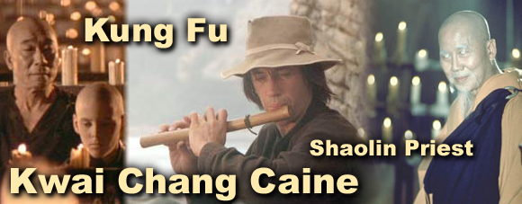

|

MASTER PO: "Vengeance is a water vessel with a hole. It carries nothing but the promise of emptiness." YOUNG CAINE: "Shall I then repay injury always with kindness?" MASTER PO: "Repay injury with justice and forgiveness, but kindness always with kindness." CAINE: "I know about war. It is a word men use to clothe the nakedness of their killing." MASTER CAINE: "How does one find the strength
within himself?" MASTER CAINE: "Between giving up and making bombs must lie many paths." MASTER CAINE: "A worker is known by his tools: a shovel for a man who digs; an ax for a woodsman. A gun is not a tool for peace." CAINE: "I was taught a good soldier is not violent. A fighter is not angry. A victor is not vengeful." MASTER PO: "Peace lies not in the world ... but in the man who walks the path." MASTER PO: "In a heart that is one with nature though the body contends, there is no violence. And in the heart that is not one with nature, though the body be at rest, there is always violence. Be, therefore, like the prow of a boat, it cleaves the water yet it leaves in its wake water unbroken." CAINE: "If you plant rice, rice will grow. If you plant fear, fear will grow." MASTER PO: "In time you will learn to fear only fear itself." CAINE: "If you trust me completely, I can help you. If I tell you, you are not within a prison, the prison is within you, can you believe that?" CAINE: "Let all effort flow out of your body. All heat flow from your body. The weight of your body becomes less and less. Until the body becomes one with the spirit which is as light as a feather ... as a breath ... as nothing at all." MASTER
CAINE: "I seek not to know all the answers but to understand the questions." MASTER PO: "Learn first how to live. Learn second how not to kill. Learn third how to live with death. Learn fourth how to die." MASTER CAINE: "You own nothing that you may
be owned by nothing." MASTER MASTER PO: "Be like the mirror ... Allow no evil to pass through you. Reflect it to its source." MASTER KAN: "Still water is like glass. It is a perfect level. A carpenter could use it. The heart of a wise man is tranquil and still. Thus it is the mirror of heaven and earth. The glass of everything. Be like still water. You look into it and see yourself." CAINE: "A wise man does not contend therefore no one can contend against him. Yield and overcome." RELIGIOUS LEADER: "If a man strikes me with a stick, I have three choices. I can strike him back, I can stand still and be injured or killed, or I can walk away." CAINE: "There is another choice." RELIGIOUS LEADER: "What other choice?" CAINE: "You can take the stick away from him." MASTER KAN: "He who attacks must vanquish. He who defends must merely survive." MASTER
|
Play John's arrangement and recording of the Kung Fu TV theme